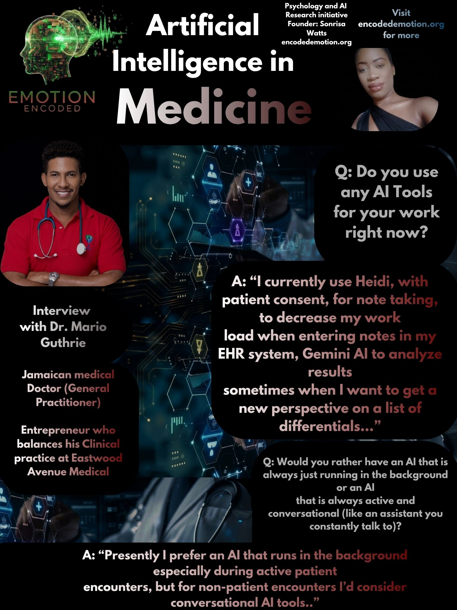

Dr. Mario Guthrie, a General Practitioner at Eastwood Avenue Medical in Kingston, Jamaica, balances a demanding clinical practice with a professional career as a musician and entrepreneur. He currently utilizes digital health tools like Heidi for clinical documentation and Gemini AI to assist with differential diagnosis, aiming to refine his workflow while maintaining the high standard of care his patients expect. I recently spoke with Dr. Guthrie to discuss his perspective on the practical integration of artificial intelligence within the primary care setting.
For the intro I asked, " Do you use any AI tools like ChatGPT or Gemini for any part of your work" right now?" He replied 'I currently use Heidi, with patient consent, for note taking, to decrease my work load when entering notes in my EHR system, Gemini AI to analyze results sometimes when I want to get a new perspective on a list of differentials."
Question: Would you rather have an AI that automates your clinical documentation (taking notes) or an AI that optimizes your business operations (scheduling, billing, and marketing)?
"I’d love both, but if I had to choose, it would be one that automates clinical documentation, as this can be terribly time consuming at the end of a busy day. I also have other tools that do some automation of my clerical tasks, like Calendly for appointment booking. It has reduced our phone call bookings, as patients become accustomed to booking their own appointments using a designated link."
Dr. Guthrie identifies clinical documentation as the most significant "time-sink" in his daily practice. While he has successfully offloaded administrative tasks like scheduling to existing digital infrastructure, he views AI-driven documentation as the essential next step in reclaiming time and reducing post-clinic fatigue.
Question: Would you rather have an AI that is always just running in the background or an AI that is always active and conversational (like an assistant you constantly talk to)?
"Presently I prefer an AI that runs in the background especially during active patient encounters, but for non-patient encounters I’d consider conversational AI tools."
Dr. Guthrie distinguishes between the needs of the consultation room and the administrative office. He prefers a "background" model for patient interactions—likely to preserve the therapeutic alliance and maintain a natural flow of conversation—while keeping the door open for interactive, conversational AI to assist with behind-the-scenes tasks.
Question: When deciding whether to integrate a new AI tool into your practice, what is the single biggest red flag that would make you immediately stop using it?
"Issues with data protections and use of information that breaches that would be my biggest red flag to not integrate an AI tool into my practice. I read the fine print of AI tools to ensure that patient information isn’t being used in untoward ways."
For Dr. Guthrie, patient privacy is non-negotiable. His practice is defined by a rigorous, proactive vetting process; he reads the "fine print" of service agreements to ensure that patient data is not exploited. Any perceived risk to confidentiality is an immediate deal-breaker, regardless of the tool’s potential efficiency gains.
RESEARCH VERDICT
Dr. Guthrie’s experience highlights the pragmatic adoption of AI by the modern GP. He views technology as a means to alleviate the burden of documentation while maintaining a human-centered approach to patient care. His perspective emphasizes that for AI to be welcomed in the clinic, it must be invisible during patient encounters, efficient in its documentation output, and, above all, maintain an uncompromising standard of data sovereignty.
Sonrisa Watts // Emotion Encoded // 2026